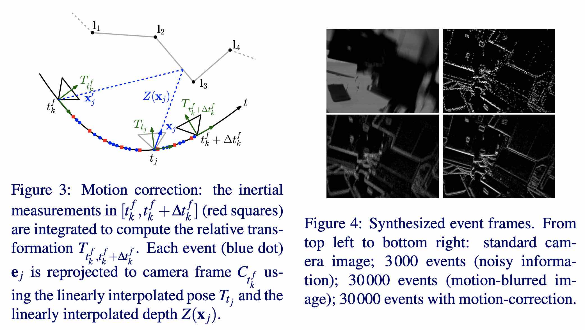

本文由我在 3D 视觉工坊 首发，在这里转载。
这篇论文提出了首个将 Event-based Camera（事件相机）、Traditional Frame-based Camera（传统相机）与 IMU 三者结合的一个 SLAM pipeline。
Ultimate SLAM？利用事件相机解锁高速运动、高动态范围场景
本篇文章主要介绍 2018 年 ICRA 的一篇论文:
Rosinol Vidal, A., Rebecq, H., Horstschaefer, T., Scaramuzza, D.,
Ultimate SLAM? Combining Events, Images, and IMU for Robust Visual SLAM in HDR and High Speed Scenarios,
IEEE Robotics and Automation Letters (RA-L), 3(2):994-1001, Apr. 2018. PDF, YouTube, Poster, Project page, ICRA18 video pitch.
视频演示地址：
这篇论文提出了首个将 Event-based Camera（事件相机）、Traditional Frame-based Camera（传统相机）与 IMU 三者结合的一个 SLAM pipeline（其实我觉得称其为 VIO 更加合适…）。
Event-based Camera 具有高速、高动态范围（HDR）等优点，关于其介绍的资料很多，这里不再赘述。
主要贡献
-
提出了首个融合了 Event Camera、传统相机、IMU 三者的 state estimation pipeline。鲁棒性好、精度高，并可在环境光照大幅突变、高速运动等情况下正常工作。这个 pipeline 可以看作是作者组里的上一篇论文《Real-time Visual-Inertial Odometry for Event Cameras using Keyframe-based Nonlinear Optimization》（Event+IMU）的扩展，将传统相机的 image 给加了进来。然后做了一些改进，使其可以在移动机器人上实时运行。
-
定量分析了将传统相机的 image 数据加进来之后，本文提出的方法在计算负荷仍然满足的情况下，状态估计精度的提升。并在真实无人机上进行了评测，可以 onboard 实时运行。并且可以在低光照、光照突变和高速运动等场景中正常飞行。
我个人认为，这篇工作主要基于 okvis 的那一套 formulation，再往优化函数里面加入一项 events frame 的重投影误差项。这样做的细节和带来的好处将在下文中提到。
具体工作
本文提出的 pipeline：
图像数据处理：首先基于 spatial-temporal window 和 IMU 的测量量，将 Event-based Camera 产生的 events 合成运动补偿（为适应高速运动场景）的 virtual event frames；此外还有传统相机的 image frames。然后对这两者分别进行 FAST 角点检测，L-K 光流法做 tracking，triangulation 出 landmark 的空间坐标、计算重投影误差，作为两个误差项。然后 IMU 的做法也就是传统 的紧耦合 VIO 中常见的方法，这里不再赘述。
1. Coordinate Frame Notation
Event-based Camera、传统相机与 IMU 三者之间的外参由事先标定好。
2. Spatio-temporal Windows of Events
上面提到，要一个合成 virtual event frame，所以这个时候就要确定一个如何选取 event 合成 frame 的策略。作者提出了一个 Spatio-temporal Window，即以传统相机的 frame 的到来时间 为基准，选取此前的 个 events 来作为合成 frame 的 events。下图的 example 为 的样例，在论文中的实验中，选取了 。这个 是要取决于场景中纹理的多少的。

3. Synthesis of Motion-Compensated Event Frames
上一条提出了选取哪些 events 的方法，接下来就要解决：如何将这些 events 合成 frame。上文也提到，在合成 frame 的时候，不是直接简单的累加，而是加入了运动补偿。
合成一帧 event frame： 的公式为：
其中， 是一个窗口中的 events， 为一个经过运动补偿后的 event 的位置。 为克罗内克函数，即形式为：
接下来求解这个运动补偿后的 event 的位置：
这个就很容易理解了。以用于合成一帧 frame 的 events 中的一个 event 的 pose 为 reference，也就是 的时候的 pose。然后一个先根据深度 反投影到空间中的 3D 点，然后经过一个位姿变换 后再进行投影即可。这个 是通过 IMU 的短时间积分得到的。关于这个 的获取，文章中提到是取在 2D image plane 上根据已知 landmark 做插值，实践中为了降低计算量，取的 landmarks 的 media depth。
对于进行运动补偿的图示和效果，在作者的另一篇（也就是上面提到的这篇的前作）中有图例展示：

4. Feature Tracking
作者同时在 event frames 和 standard camera frames 上分别进行 FAST 角点检测，并通过 KLT 进行跟踪。两者是完全相互独立的。这里的做法也就比较常规了，每个 feature 被当作 candidate feature，在多帧之间进行跟踪。当它可以被可靠的三角化，就三角化为空间中的 3D 点 landmark，并被当作为 persistent feature 用于更长远的后面帧的一直跟踪。当被跟踪的 feature 小于一个阈值，这个时候就重新进行 feature detection。在两种 frame 上用于 feature 检测和跟踪的参数是一样的。
5. Visual-inertial Fusion through Nonlinear Optimization
构造了如下的 cost function：
很直观，这是一个帧数为 的 sliding window 中进行的优化，前面一项就是两种 frames 的重投影误差，其中 表示是是 event 还是传统相机。第二项就是 IMU 的误差项。这些就是标准 VIO 的标配了，具体可见 okvis，这里不再赘述。
作者论文中提到，这种优化方式，自然而然就会往当前工作状态更好的 sensor 去靠近。比如当前环境光照很低，传统相机效果极差，但 event 的工作较好，优化自然会更多的利用 event 的信息。
6. Additional Implementation Details
6.1 Initialization
初始化的时候，认为系统是静止的。收集一段时间的 IMU 的测量量来估计初始位姿，并且初始化陀螺仪与加速度计的 bias。
6.2 No-Motion Prior for Almost-Still Motions
当近乎静止的时候，系统此时几乎是没有 event 输出的。为了应对这种情况，当检测到 event 的产生速率低于一定的阈值的时候（论文中提到为 events/s，measure window 为 20ms），就在优化问题中加一个速度为零的强先验。
论文实验
在数据集上，作者设定了不同的对比实验。详细的论文实验和参数设置请详见论文。这里简单放一些结果。
同时采用三者（Fr+E+I）与只采用（E+I）、只采用（Fr+I）进行对比：
（Fr+E+I）与当前的 SOTA 的（E+I）方案进行对比：
作者在真实无人机上进行实验。飞控使用 PX4，onboard computer 使用 Odroid。相机下视。作者做了绕圈飞和悬停的实验；以及飞行过程中的开关灯，导致环境光照剧烈变化。
飞行时的图片样例：
视频效果请见本文开头论文作者发布在 YouTube 上的视频。
本博客所有文章除特别声明外，均采用 CC BY-SA 4.0 协议 ，转载请注明出处！联系作者。